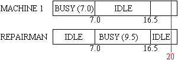
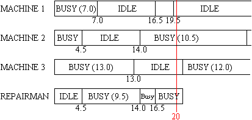

| Machine Repair Simulation |
A system is composed of 1, 2, or 3 machines and a repairman responsible for maintaining these machines. Normally, the machines are running and producing a product. At random points in time, the machines fail and are fixed by the repairman. If a second or third machine fails while the repairman is busy fixing the first machine, these machines will wait on the services of the repairman in a first come, first served order. When repair on a machine is complete, the machine will begin running again and producing a product. The repairman will then repair the next machine waiting. When all machines are running, the repairman becomes idle.
Write a program that will simulate this system for a fixed period of time and calculate the fraction of time the machines are busy (utilization) and the fraction of time the repairman is busy (utilization). Machines are busy when producing parts and the repairman is busy when repairing machines.
A sample input file and the corresponding output file (print results accurately rounded to 3 decimal places) is provided below. Diagrams are also provided to illustrate the simulation process.
Machine running times (10 five column fields per record) 7.0 4.5 13.0 10.5 3.0 12.0 ................... Machine repair times (10 five column fields per record) 9.5 2.5 4.5 12.0 5.7 1.5 ................... Cases (2 five column fields per record) 20.0 1 20.0 3 . . . . 0.0 0
No of Utilization
Case Machines Machine Repairman
1 1 .525 .475
2 3 .558 .775
. . . .
. . . .

Machine Utilization = (7 + 3.5)/20 = .525 Repairman Utilization = (9.5)/20 = .475

Machine Utilization = ((7+3)+(4.5+6)+(13))/(3*20) = .558 Repairman Utilization = (15.5)/20 = .775